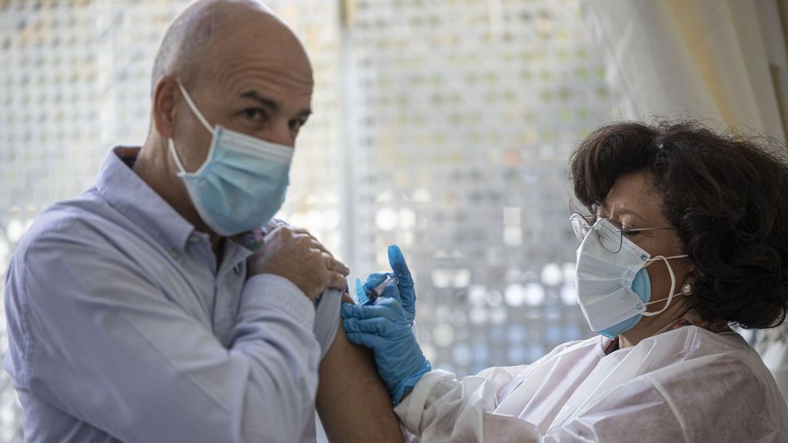

La vacuna de la gripe que reciben los mayores en España reduce el riesgo de contraer la covid en un 39%, según un estudio

'Este año, vacúnate contra la gripe'.Las autoridades sanitarias llevan meses recomendando a personas mayores de 65 años y personas de riesgo que se inyecten la dosis contra la influenza para evitar males mayores con la covid-19.Ahora, un estudio preliminar holandés ha demostrado que esta vacuna puede servir, también, para reducir la probabilidad de contagio de la covid-19 en hasta un 39%.
La respuesta a este resultado esperanzador se encuentra en la inmunidad innata, nuestra primera línea de defensa contra los patógenos.'Esta inmunidad supone la primera barrera de protección y, hasta hace poco, se creía que era una fuerza bruta, que no se podía entrenar.Lo que han demostrado que hace la vacuna de la gripe tetravalente, que es la que suele poner en España a las personas mayores de 65 años, es estimular esa primera protección para que esté más preparada de cara a recibir virus del exterior.No específicamente contra la covid-19, pero sí que puede ayudar contra él', explica para Uppers Marcos López, presidente de la Sociedad Española de Inmunología (SEI)
Para llegar hasta esta conclusión, el equipo científico dirigido por Mihail Netea, del Centro Médico de la Universidad de Nimega, dividió su trabajo en dos fases.Por un lado, estudiaron la respuesta inmunitaria de muestras de sangre de personas sanas.A estas muestras primero las inocularon la vacuna tetravalente de la gripe y, después, fueron infectadas con SARS-CoV-2.Todo in vitro.El resultado fue un aumento de la inmunidad innata y una mayor producción de citoquinas, encargadas de llamar a otras células del organismo para matar a las células contagiadas.
La otra variante del estudio involucró a 10.000 sanitarios holandeses que habían sido también vacunados con la tetravalente de la gripe.De todos ellos, solo se infectaron 194 con la covid-19 y el estudio demuestra que el riesgo de contraer la covid es un 39% menor en aquellos que estaban vacunados de la gripe respecto a los que no.
'Encontramos que la infección por SARS-CoV-2 era menos común entre los empleados de hospitales holandeses que habían recibido la vacuna contra la influenza durante la temporada de invierno 2019/2020.En conclusión, una vacuna tetravalente inactivada contra la influenza puede inducir respuestas de inmunidad entrenadas contra el SARS-CoV-2, lo que puede resultar en una protección relativa contra COVID-19', explican en el estudio.
La esperanza es amplia porque, además de el tipo de vacuna de la gripe utilizado en el estudio ya se aplica en España, el concepto de 'inmunidad entrenada' ya se había oído antes en relación a la covid-19, cuando se demostró que la vacuna contra la tuberculosis (BCG) también inducía una mayor protección contra el SARS-CoV-2.'Con la gripe parece que sería lo mismo: se inducen cambios en las células de respuesta inmune innata que tiene que ver con el aumento de inmunidad', explica el presidente de la SEI.
Este estudio y sus conclusiones preliminares son 'un motivo más para fomentar la vacunación de la gripe en la gente mayor.Así tenemos el argumento de que evitamos la gripe y que, además, parece que protege contra la covid-19', argumenta López.
Posted On: 2020-11-13T00:00:00
Content Date: 2020-11-13
Download Date: 2021-04-08
Document ID: L0C049OHR